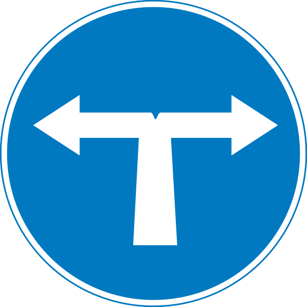

Loading...

Turn left or right only
🔵 Mandatory Signs
📖 Description
This sign indicates that driving straight ahead is prohibited. Drivers must turn either left or right at the junction. It is used where continuing straight is unsafe or impossible, such as dead ends or restricted zones.